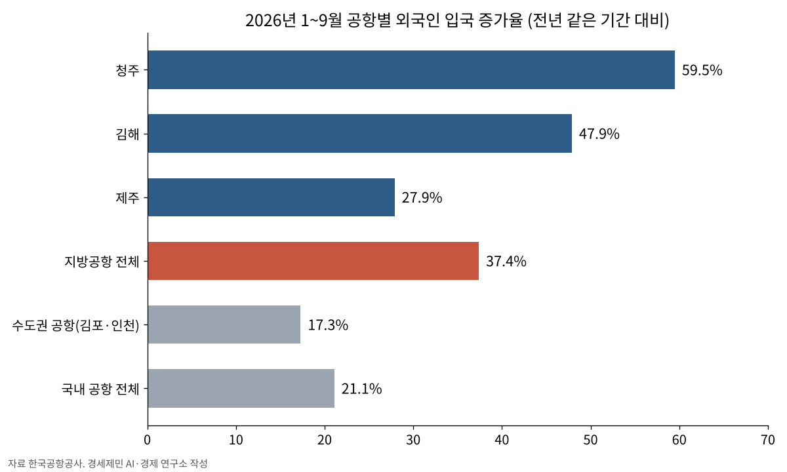

지방공항 외국인 입국 37% 늘어 324만명…수도권 공항의 두 배
1~9월 김해·제주·청주·대구 집계, 김포·인천은 17.3%
동계 시즌 국제선 주 3206편, 하계보다 11.6% 늘려
김해 시간당 슬롯 27→30편, 청주 8→10편
AI경제저널=김갑봉 기자 | 한국공항공사(사장 김원준)는 올해 1~9월 김해·제주·청주·대구공항의 외국인 입국객이 약 324만명으로 1년 전보다 약 37% 늘었다고 지난달 30일 밝혔다.
같은 기간 김포·인천 등 수도권 공항의 외국인 입국 증가율은 17.3%였다. 지방공항 증가율 37.4%가 수도권의 두 배를 넘었다. 인천을 포함한 국내 공항 전체로 들어온 외국인은 약 1503만명으로 21.1% 늘었다.
대만인 60% 늘어, 김해는 77%
공항별 증가율은 청주공항이 59.5%, 김해공항이 47.9%, 제주공항이 27.9%였다.
국적별로는 지방공항으로 들어온 대만인이 약 96만명으로 60.4% 늘었다. 김해공항의 대만인 입국객은 약 65만명으로 76.7% 증가했다. 일본인은 약 45만명으로 43.5%, 중국인은 약 130만명으로 29.4% 늘었다.
공사는 문화체육관광부가 지난 9월 10일 선정한 지방공항 중심 5대 관광권(김해·대구·청주·양양·무안)과 연계해 공항별 국제선 활성화 전략을 펴겠다고 밝혔다.

동계 국제선 주 3206편
공사는 이에 앞서 지난달 28일 전국 14개 공항의 2026년 동계 시즌(2026년 10월 25일~2027년 3월 27일) 운항 계획을 내놨다. 정기편은 주 1만208편으로 직전 하계보다 주 110편(1.1%) 많다.
국제선은 주 3206편으로 주 332편(11.6%) 늘었다. 동남아 노선이 주 452편에서 600편으로, 중국 노선이 주 718편에서 844편으로 늘었다.
정부의 「외래관광객 3천만 명 조기 달성」 정책에 따라 김해·청주공항의 슬롯(시간당 이착륙 가능 편수)도 늘었다. 김해공항은 시간당 최대 27편에서 30편, 청주공항은 8편에서 10편이 됐다.
새 노선도 생긴다. 김해-샤먼·광저우, 청주-샤먼, 제주-스좌장 노선이 열리고, 김해공항에는 12월부터 하네다 부정기편이 매일 1편 다닌다. 김해-쿠알라룸푸르 노선(주 8편)은 2024년 이후 중단됐다가 다시 열린다.
지방공항 국제선 여객 사상 최대 전망
김해공항은 지난달 22일, 제주공항은 10일 이미 연간 국제선 여객 최다 기록을 경신했다. 공사는 청주공항도 10월 중 기록을 경신할 것으로 내다봤다.
올해 1~9월 지방공항 국제선 여객은 1503만7505명으로 1년 전보다 22.9% 늘었다. 공사는 지난해 세운 최대 기록 1698만2600명을 올해 넘어설 것으로 보고 있다.
국내선에서는 김해-인천, 대구-인천 노선도 동계 시즌 운항 계획에 들었다.
김원준 사장은 "항공산업의 진정한 성장은 국민의 해외여행 편의를 넘어 세계인이 우리 지역을 찾는 데까지 이어져야 의미가 있다"고 말했다.
참고문헌
- "떠나는 공항에서 찾아오는 공항으로...전년 대비 지방공항 외국인 입국 37% 증가", 한국공항공사, 2026.10.30., https://www.airport.co.kr/www/cms/frBoardCon/boardView.do?MENU_ID=1060&SITE_NO=2&BOARD_SEQ=41&BBS_SEQ=3554803
- "한국공항공사, 2026년 동계 시즌 지방공항 국제선 운항 확대", 한국공항공사, 2026.10.28., https://www.airport.co.kr/www/cms/frBoardCon/boardView.do?MENU_ID=1060&SITE_NO=2&BOARD_SEQ=41&BBS_SEQ=3554801
[사진 출처]
- [사진1] "Cjj photo.JPG", 위키미디어 공용, 퍼블릭 도메인, 2007.5.28. 촬영, https://commons.wikimedia.org/wiki/File:Cjj_photo.JPG
관련기사
- 인천공항공사, '공공기관 AI 혁신 챌린지' 대상…AI 항공안전관리체계
- 인천공항공사, 국제항공화물포럼서 대한항공·LX판토스·한진과 공동 홍보관
- 김포공항 국제선 주차장, 로봇이 대신 주차…시범 운영 시작
- 두 공항공사 '청년 AI 서포터즈' 마무리…분실 방지·공항 시간 플래너 제안
저작권자 © AI경제저널 무단전재 및 재배포, AI학습 및 활용 금지